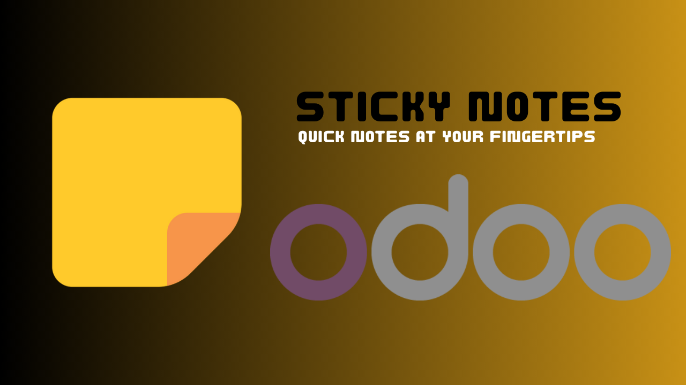

Quick Notes at Your Fingertips — Create and manage sticky notes directly from your Odoo systray.
Last Updated: 2 NOV 2025 (v18.0.1.0.0)
Everything you need to take quick notes without leaving your workflow.
Create new notes instantly from the Odoo systray dropdown.
Access, edit, and organize all your saved notes easily.
Designed for simplicity — no extra load, just pure productivity.
Works seamlessly with Odoo 17, 18, and 19 — both Community and Enterprise editions.
Need help or want a customization? Reach us at shahiddev91@gmail.com.